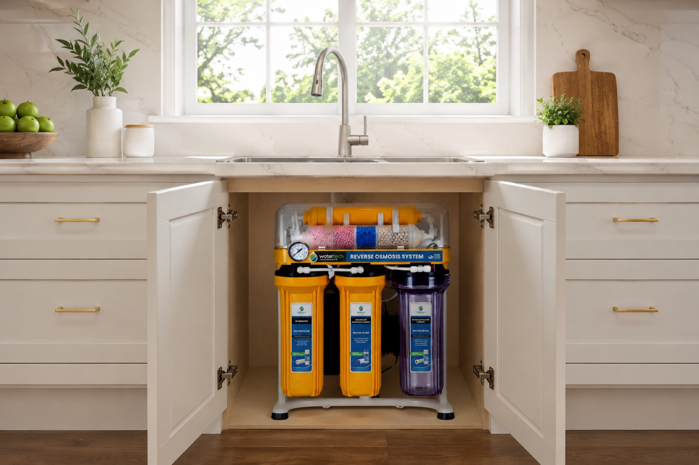

Línea residencial
Agua más segura y cómoda para el hogar.
Soluciones de purificación y filtración para familias que buscan mejor sabor, mayor confianza y practicidad diaria en el punto de consumo.

Ideal para el hogar
- Purificación en cocina Equipos para punto de consumo y espacios residenciales.
- Agua de mejor calidad Mejor sabor, mayor confianza y uso diario más seguro.
- Mantenimiento simple Repuestos y seguimiento para mantener el rendimiento del sistema.

Beneficios
Más comodidad en el hogar, mejor sabor en el agua y confianza diaria para toda la familia.
-
Uso diario
Agua más práctica para cocinar, beber y servir.
-
Instalación simple
Opciones compactas para casas, departamentos y cocinas.
-
Respaldo real
Asesoría, repuestos y seguimiento cuando lo necesites.


Asesoría ideal